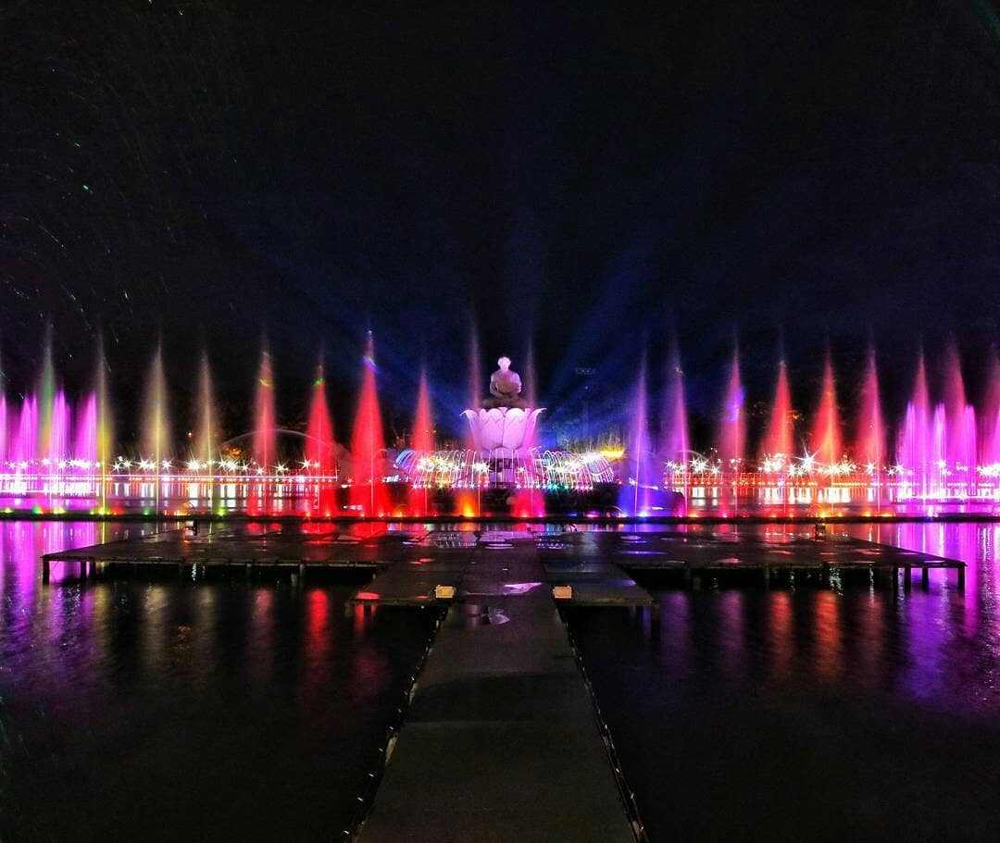
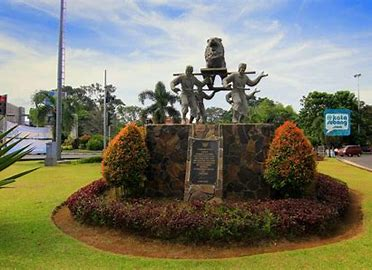

Profil
09 January 2024
Air mancur sri baduga
Purwakarta Istimewah
Description

Kabupaten Purwakarta (bahasa Sunda: aksara Sunda: ᮕᮥᮁᮝᮊᮁᮒ) adalah sebuah wilayah kabupaten yang
terletak di Provinsi Jawa Barat, Indonesia. Ibu kotanya adalah Kecamatan Purwakarta Kota serta
berjarak kurang lebih 80 km sebelah tenggara Jakarta dan 44 km sebelah barat laut Bandung.[1][2]
Kota ini dijuluki sebagai kota pensiun karena suasananya yang tenang dan jauh dari hiruk piruk kota.
Selain kota pensiun, Purwakarta juga memiliki julukan kota tasbih dan Purwakarta cantik.
Riwayat Pendidikan

kata-kata hari ini
Awali Pagi Mu Dengan Senyuman
Subang ᮞᮥᮘᮀ

Kabupaten Subang (bahasa Sunda: ᮞᮥᮘᮀ) adalah sebuah kabupaten di Provinsi Jawa Barat, Indonesia. Kabupaten
ini beribu kota di Kecamatan Subang Kota. Kabupaten ini berbatasan dengan Laut Jawa di utara, Kabupaten
Indramayu di timur, Kabupaten Sumedang di tenggara, Kabupaten Bandung Barat di selatan, serta Kabupaten
Purwakarta dan Kabupaten Karawang di barat. Pada pertengahan 2023, jumlah penduduk kabupaten Subang sebanyak
1.624.856 jiwa.
Berdasarkan Peraturan Daerah Kabupaten Subang Nomor 3 Tahun 2007, Wilayah Kabupaten Subang terbagi menjadi 30
kecamatan, yang dibagi lagi menjadi 245 desa dan 8 kelurahan. Subang dahulu bernama Karawang Timur.[6]
Os
Deas
The CSS Grid Layout Module offers a grid-based layout system, with rows and columns, making it easier to design
web pages without having to use floats and positioning:
Deas
Tanggal Lahir 16-07-2007
Cipeundey-PWK
PURWASUKA